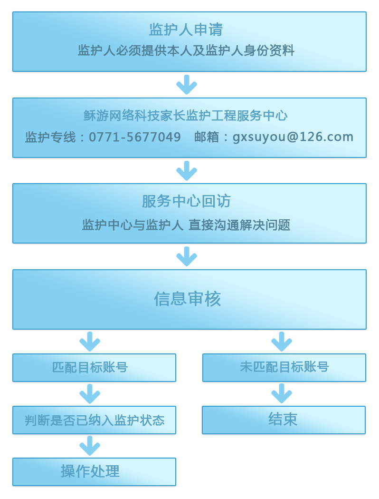

“网络游戏未成年人家长监护工程”由中华人民共和国文化部指导，旨在加强家长对未成年人参与网络游戏的监护，引导未成年人健康、绿色参与网络游 戏，和谐家庭关系的社会性公益行动。它提供了一种切实可行的方法，一种家长实施监控的管道，使家长纠正部分未成年子女沉迷游戏的行为成为可能。
该项社会公益行动充分反映了中国网络游戏行业高度的社会责任感，对未成年玩家合法权益的关注以及对用实际行动营造和谐社会的愿望。 >>>>《未成年人健康参与网络游戏提示》
